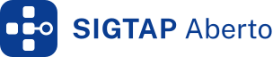
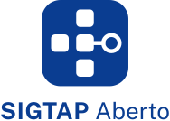
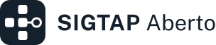
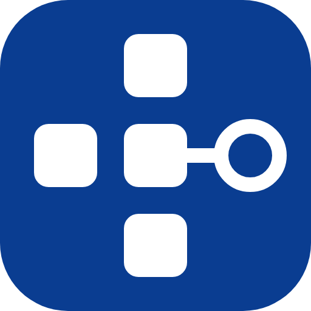

SIGTAP Aberto: guia da marca
O símbolo é uma cruz de células de tabela. A tabela e a saúde estão na cruz; o braço direito é um nó aberto, ligado pela linha-guia que também conduz a interface.
Símbolo e versões
Use o arquivo pronto da pasta svg/. Nunca redesenhe o símbolo nem recrie o nome com outra fonte: o nome já está em contorno.

Horizontal
horizontal.svg — barra de topo, documentos, cabeçalhos.

Vertical
vertical.svg — abertura, tela de inicialização, capas.
Símbolo
simbolo.svg — ícone do programa e espaços pequenos.
Negativo e monocromático
Sobre fundo azul ou escuro, use o negativo. Em impressão de uma cor, use o monocromático.
horizontal-negativo.svg

vertical-negativo.svg

*-mono-negativo.svg

*-mono.svg
Cor
| Nome | Valor | Uso | |
|---|---|---|---|
| Casco | #0A3D91 | Marca, ação principal. Contraste 10:1 sobre branco. | |
| Tinta | #14202B | Texto e versão monocromática. | |
| Apoio | #3F4C59 | Texto secundário. | |
| Fundo | #F2F4F7 | Fundo de documentos e telas. | |
| Branco | #FFFFFF | Símbolo sobre o casco; negativo. |
Tipografia
O nome é composto em Public Sans: SIGTAP em Bold (700), Aberto em Regular (400), com a mesma altura. A interface usa a mesma família.
Espaço livre e tamanho mínimo
Até 32 px de altura use o desenho pequeno (simbolo-pequeno*.svg): traço mais grosso e células maiores, para a linha e o anel não virarem mancha. Acima disso, o normal. O componente escolhe sozinho.
Deixe ao redor da marca, no mínimo, um quarto da altura do símbolo. Nada entra nessa área.
Área reservada tracejada.
Tamanho mínimo e desenho pequeno
Símbolo: 16 px (desenho pequeno)
Horizontal: 32 px de altura
32 px: pequeno e normal
Vertical: 64 px de altura
Ícone do programa
O símbolo sobre o casco, com cantos arredondados. As variações do ícone estão em icones/ (16 a 512 px e icon.ico).

Animação
Três versões, e só elas. A sutil é também a versão de movimento reduzido: com redução de movimento, o carregamento mostra o brilho lento da sutil (5 s) e as demais ficam paradas. Todas respeitam prefers-reduced-motion.

Sutil
Um brilho sai do quadrado central, corre a linha-guia, entra no nó pela esquerda, contorna o anel nos dois sentidos e se encontra à direita (ciclo de 5 s). Para telas paradas por muito tempo.
Inicialização
Uma vez, em 1,84 s de movimento mais 0,16 s de saída: 2 s no programa. O casco assenta, as células entram em sequência, a linha-guia corre a 52 unidades por segundo e o anel se fecha na mesma velocidade horizontal (os dois arcos se encontram à direita; o perfil do arco compensa a curva do círculo, que a olho parece frear nas pontas), o anel pulsa uma vez e o nome se revela da esquerda para a direita. Ao abrir o programa; com movimento reduzido não há espera.

Carregamento
Um fluxo contínuo, sem pausa nem emenda, em ciclos de 1,4 s: uma luz anda pelo caminho (esquerda, centro, cima, linha, baixo, anel) a velocidade constante e deixa um rastro que apaga devagar; o ciclo seguinte começa antes de o rastro acabar. Cima e baixo entram suaves, um de cada vez, para não estourar. Só enquanto algo carrega; sempre com o texto do que está acontecendo. Com movimento reduzido, vira o brilho lento da animação sutil.
Não faça
Esticar ou comprimir.
Girar ou inclinar.
Trocar as cores.
Sombra, brilho ou contorno.
Também não: mover o nó para outro lado, remover a linha-guia, usar o símbolo sobre fundo sem contraste, acrescentar o nome em outra fonte ou criar animações novas.
Arquivos
| Pasta | Conteúdo |
|---|---|
svg/ | Símbolo (normal e pequeno), horizontal e vertical; padrão, negativo, mono e mono-negativo; sem-casco.svg e sem-casco-branco.svg (a cruz sem o casco). |
animacao/ | sutil.svg, carregamento.svg, inicializacao.svg, inicializacao-vertical.svg. |
icones/ | PNG em 16, 24, 32, 48, 128, 256 e 512 px e icon.ico (16 a 32 px com o desenho pequeno). |
gerar_marca.py | Gera os SVGs e os caminhos usados pelo programa. Não edite os SVGs à mão. |